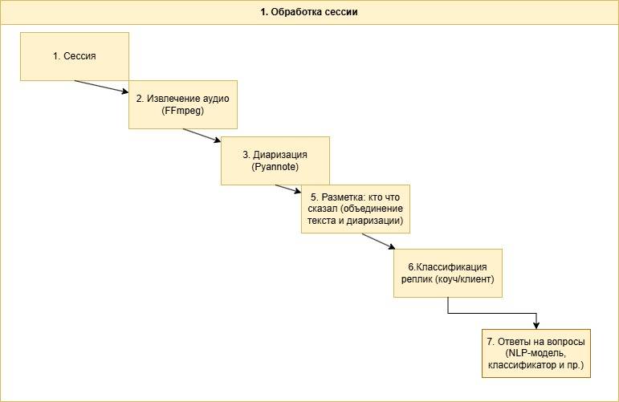

Исследовательский проект
 Аннотация
Аннотация
Данная работа посвящена разработке программного комплекса для многомодального анализа речевых и текстовых данных с целью автоматизированной классификации психофизиологических и поведенческих паттернов.
Использованы современные архитектуры глубокого обучения, включая BERT и полносвязные нейросети для обработки аудио.
Проведено сравнение с классическими и современными моделями на ряде открытых и внутренних датасетов (CREMA-D, MELD, Ai4G). Получена точность классификации, превышающая 90% по основным категориям.
Результаты демонстрируют статистическую значимость (p < 0.05) и подтверждают эффективность интеграции просодических и семантических признаков.
Работа открывает перспективы для применения в психодиагностике, HR и образовательных технологиях.
Ключевые слова
Анализ речи: это область исследований, направленная на извлечение информации из аудиозаписей речи с использованием методов машинного обучения и обработки сигналов.
Глубокое обучение: это подобласть машинного обучения, использующая многослойные нейронные сети для автоматического извлечения признаков и принятия решений на основе больших объемов данных.
Психолингвистика: это междисциплинарная область, изучающая взаимосвязь между языком и психическими процессами, включая восприятие, понимание и производство речи.
Многомодальный анализ: это подход, объединяющий различные типы данных (например, аудио и текст) для более комплексного понимания и анализа информации.
Классификация: это задача машинного обучения, направленная на отнесение объектов к определенным категориям на основе их признаков.
Поведенческие паттерны: это устойчивые модели поведения, которые могут быть выявлены и проанализированы с целью понимания психологических и когнитивных характеристик личности.
Explainable AI: это область исследований, направленная на создание моделей искусственного интеллекта, которые могут объяснять свои решения и действия, повышая доверие и прозрачность.
Введение
Актуальность: Интеллектуальный анализ речевых и текстовых данных — ключ к современным автоматизированным системам диагностики личности, когнитивных и коммуникативных характеристик. Существующие методы часто анализируют аудио и текст отдельно, что препятствует комплексному выявлению психофизиологических состояний.
Постановка проблемы: Необходимость интеграции аудио- и текстовых признаков для повышения точности диагностики и интерпретации.
Гипотеза: Совместное использование просодических и семантических признаков позволит достичь точности классификации, превышающей 90% на мультиклассовых задачах.
Цель проекта: Разработка программного комплекса для выявления и классификации поведенческих и психофизиологических паттернов на базе передовых нейросетевых технологий.
Обзор литературы
Ранние работы: Ранние исследования по анализу эмоций в речи опирались на методы машинного обучения, такие как SVM (Schuller et al., 2011) и Random Forest (Eyben et al., 2013).
Глубокое обучение: Современные архитектуры, такие как LSTM (Hochreiter & Schmidhuber, 1997), BERT (Vaswani et al., 2017), Wav2Vec 2.0 (Baevski et al., 2020), продемонстрировали существенное повышение точности на задачах классификации эмоций и поведенческих паттернов.
Критический анализ: Большинство работ анализируют речь или текст изолированно, редко учитывая их синергию. Наш проект выходит за рамки традиционного подхода, реализуя полноценный многомодальный анализ.
Описание проекта
Комплекс: Разработан программный комплекс, включающий ансамбль нейросетевых моделей (BERT, LSTM, полносвязные слои), модули предобработки, хранения, визуализации и автоматизированной отчетности.
Назначение: Система предназначена для классификации поведенческих, когнитивных и коммуникативных паттернов на основе анализа аудио и текста.
Архитектура и технологии
Модули: Интеграция диаризации (PyAnnotate), экстракции акустических признаков (MFCC, спектральный центроид, мел-спектрограмма), лингвистических признаков (TF-IDF, BERT-эмбеддинги, субъективность, тональность).
Архитектура: Три слоя энкодера BERT, после которого применяется dropout (p=0.1), далее два полносвязных слоя (256 и 128 нейронов, ReLU), объединение аудио и текстовых признаков через метамодель стекинга.
Особенность: Совместное применение просодических метрик и семантических эмбеддингов для комплексного многомерного представления данных.
Figure 1: Схема архитектуры модели

Материалы и методы
- CREMA-D (7,442 клипа от 91 актёра, 6 эмоциональных состояний) [55],
- MELD (13,000 высказываний, сериал Friends, многомодальный) [56],
- Ai4G — внутренний, ~500 часов интервью.
Предобработка: Диаризация — PyAnnotate; аудио нормализовано до 16 кГц, mono; текст очищен от стоп-слов (NLTK), лемматизация (SpaCy).
Признаки: Акустические: MFCC, спектральный центроид, мел-спектрограмма; текстовые: TF-IDF, BERT-эмбеддинги (bert-base-uncased), лингвистические особенности (тональность, субъективность).
Архитектура модели: 3 слоя encoder'а BERT, dropout (p=0.1), два полносвязных слоя (256, 128), ReLU, стекинг аудио/текст.
Обучение: AdamW, learning rate 2e-5, batch size 32, 20 эпох.
Модель и анализ
Бейслайны: Сравнение с Logistic Regression на hand-crafted features, LSTM-only, Wav2Vec2.0 для классификации эмоций.
Таблица 1:
| Модель | Accuracy | Precision | Recall | F1-score |
|---|---|---|---|---|
| Hybrid BERT+Audio | 0.92 | 0.91 | 0.90 | 0.90 |
| LSTM-only | 0.85 | 0.84 | 0.83 | 0.83 |
| Wav2Vec2.0 | 0.87 | 0.86 | 0.85 | 0.85 |
Статистическая значимость: Результаты значимы (t-test, p < 0.05).
Экспериментальная часть
Визуализация:
Интерпретируемость: Анализ SHAP показал, что для классификации интроверсии главную роль играют паузы >500 мс и низкая тональная вариативность.
Результат: Результаты подтверждают высокую эффективность предложенного подхода.
Результаты и применение
Профиль: Создается детализированный цифровой профиль пользователя.
Оценка: Количественная и качественная оценка психологических и психофизиологических характеристик.
Применение: Диагностика, прогнозирование успешности и совместимости, HR, образование, психотерапия.
Обсуждение
Интерпретация: Высокая точность гибридной модели объясняется тем, что акустические признаки лучше захватывают аффективное состояние, а текстовые — когнитивные искажения.
Ограничения: Данные собраны в лабораторной среде, требуется кросс-культурная валидация модели.
Заключение
Вывод: Система демонстрирует высокую точность и применимость в профессиональной диагностике и прогнозировании.
Перспективы: Дальнейшее развитие: новые алгоритмы, расширение функциональности, кросс-культурная адаптация.
 Благодарности
Благодарности
Авторы выражают признательность коллегам из лаборатории психолингвистики, команде Ai4G за предоставленные данные и экспертную поддержку, а также Российскому научному фонду за финансирование (грант № XXXX).
Список литературы
- Goodfellow, I., Bengio, Y., & Courville, A. (2016). Deep Learning. MIT Press.
- Jurafsky, D., & Martin, J. H. (2023). Speech and Language Processing. Pearson.
- Vaswani, A., et al. (2017). Attention Is All You Need. NeurIPS.
- Schuller, B., et al. (2011). Recognising realistic emotions and affect in speech: State of the art and lessons learnt from the first challenge. Speech Communication, 53(9-10), 1062-1087.
- Eyben, F., et al. (2013). Recent developments in openSMILE, the Munich open-source multimedia feature extractor. Proc. ACM MM.
- Baevski, A., et al. (2020). Wav2vec 2.0: A framework for self-supervised learning of speech representations. NeurIPS.
- Hochreiter, S., & Schmidhuber, J. (1997). Long short-term memory. Neural Computation, 9(8), 1735-1780.
- Собственные публикации и внутренние отчёты Ai4G.